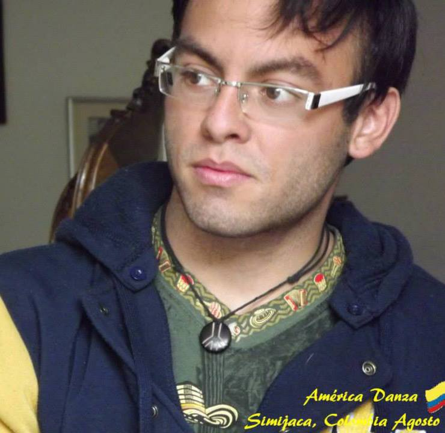

image/svg+xml
A
P
M
Hoja de Vida
Ariel Edgardo Pinto Marchant
24/Abril/1993
Santiago de Chile
Inicio|
Educación|
Experiencia
Información Profesional

Perfil
Ariel Pinto Marchant estudia Ingeniería en Biotecnología Molecular en la Facultad de Ciencias de la Universidad de Chile. Aca se ha desarrollado en el estudio de técnicas de desarrollo científico como:
q-PCR
Citometría de flujo
Bioinformática
Transformación de bacterias
Test de Elisa en el estudio de linfocitos T CD4+
Inmunoprecipitación
Además maneja diversos idiomas como:
Español (nativo)
Inglés (nivel upper-intermediate)
Portugues (básico)